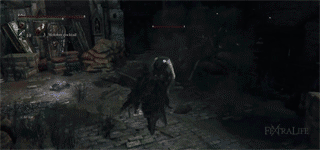

Blade of Mercy is a Trick Weapon in Bloodborne; it's one of two skill/arcane hybrid weapons.
"A special trick weapon passed down among hunters of hunters. One of the oldest weapons of the workshop.
Splits into two when activated. The weapon's warped blades are forged with siderite, a rare mineral of the heavens. Most effective swift attacks,such as after a quick-stepping."
Blade of Mercy Information
- Requires Blood Stone Shards and Blood Echoes to fully upgrade.
- This is one of two skill-based weapons in Bloodborne that has direct scaling with arcane for damage output.
Location
Normal
- Can be purchased from the Messengers for 40000 echoes after obtaining the Crow Hunter Badge from Eileen the Crow's quest line.
- Killing Eileen is also a way to get the weapon early in the game.
- While progressing through Eileen's quest, it's possible for her to be killed by Henryk and thus drop the Crow Hunter Badge as a result, although the quest line will end.
Uncanny Blade of Mercy
- Lower Ailing Loran Root Chalice - Fetid/Rotted (unknown whether these Offerings are necessary)
- Sinister Lower Loran Root Chalice
- Glyphs: 5f7nv9uy (Layer 1), kg2gu4ht (Layer 2)
- Rotted Fetid Lower Loran ( 2erutqky ) - Inside cask in loot area before 1st boss after opening gate.
- Sinister Lower Loran Root Chalice Glyph: v77hfp2e, layer 1 side area before boss.
Lost Blade of Mercy
- Pthumeru Ihyll Root Chalice
- Sinister Pthumeru Ihyll Root Chalice
- Glyphs: sz73v83s (Layer 2)
- Pthumeru Ihyll Root Chalice (Cursed Fetid Rotted)
- Glyph: yuwuijne (Layer 2, side area before the boss)
- Note: Also contains Lost Burial Blade and Ring of Betrothal
- Pthumeru Ihyll Root Chalice (Cursed Fetid Rotted) Layer 1 Pre-Boss Side area
- Glyph: zziz2qbx
Player Notes
- The normal form of this weapon is a curved sword with a standard and versatile move set.
- Despite what its small size may imply, it deals decent damage per attack in addition to having fast swings.
- As such, it has a higher than average DPS but suffers short range in the mean time.
- On the flip side, the transformed mode utilizes dual mini-curved swords that have a faster attack speed; this comes at the cost of disabling a normal left-handed weapon and less damage per individual strike.
- R1 attacks in the transformed form has a wind up time before reaching the highest attack speed in the fifth strike.
- In PVP, if you believe you can win a battle of attrition, it can be used to bait an opponent into overextending a skirmish, especially if the opponent is unaware of the wind up attack speed.
- Be careful not to spam this tactic; smart opponents will unleash visceral attacks if they realize what you're trying to accomplish.
- The Blade of Mercy is best suited for fighting individual targets rather than a group due to its move set; this is due to the weapon's kit favouring sidestep thrusts and quicksteps that are difficult to retaliate against in a battle of speed when your opponent is alone.
- Rally is somewhat low due to the weapon's fast attack speed. Combos with this weapon can potentially alleviate this issue, but take care not to exhaust your stamina in the process.
- This weapon lacks the ability to do a charged R2 attack in transformed mode.
- Due to its fast attack speed, it can be useful for inflicting Rapid or Slow Poison.
- L2 attacks in the transformed mode causes the hunter to attack and hop backwards simultaneously.
- This is useful as a defensive mechanism since it grants you breathing room from your opponent.
- It's also useful as a finisher to any combos you unleash on an opponent, dealing considerably high damage and distancing yourself so that you can recover stamina.
- Think like a rogue/assassin/thief from a traditional RPG when using this weapon. You will typically not win battles by brute force, but rather through speed, patience, positioning and dedication.
- The blade lacks decent heavy attacks to stun heavier foes but the transformation attacks can be used as heavy attacks.
- This weapon has many similarities to the Burial Blade.
- Both weapons have a direct scaling with arcane towards their damage outputs.
- They cannot be buffed by external sources.
- Furthermore, it's impossible to modify their damage type into Fire/Bolt/Arcane through blood gem fortification.
Stats/Scaling
R: Rally/Regain. The amount of HP regained on an R1 attack immediately after taking damage
Move sets & Videos
Blade of Mercy move set showcaseMoveset testing done by -
Regular Move set
Numbers were tested on a level 120 player with no armor using a +10 Blade of Mercy.
Numbers were tested on a level 120 player with no armor using a +10 Blade of Mercy.
| Move |
Damage Type & Modifier |
Stamina |
Effect[1] |
|---|---|---|---|
| R1 Combo |
  1.00x, 1.02x, 1.04x 1.00x, 1.02x, 1.04x |
15 |
There are three moves in the combo consisting of horizontal slashes. The first is right to left followed by left to right with the third being right to left with a slight upward motion as well. The even attacks (2, 4, 6) are all the left to right slash. All right to left slashes (odd numbers) except the first use the motion that includes the slight upward trajectory. This has very little stamina cost and can create very long combos. In addition, since all of the attacks are basically the same, pacing and consistency make this an easy combo to utilize. |
| Quickstep R1 |
1.50x |
25 |
There are three quickstep animations. Stepping right or back creates a quick forward hop and slash from right to left. The left step is reversed with the slash animation. Stepping forward leads the character to drag the blade from the ground to the side of the left foot and up on a diagonal, ending at about shoulder height. The front step is the only one that doesn't have a hop forward, instead taking only a short step. |
| Backstep R1 |
1.50x |
25 |
The backstep R1 has a quick forward lunge which includes a horizontal slash from left to right. |
| Rolling R1 |
1.50x |
25 |
The blade is quickly slashed from the ground near the left foot, up and to the right ending at just above shoulder height. |
| Dash R1 |
 1.40x 1.40x |
15? (+run) |
The hunter ends the run with a step and forward stabbing motion. |
| R2 Attack |
1.25x |
30 |
The hunter reverses his grip on the blade and brings it behind his body, then quickly slashes forward right to left and returning the grasp to the standard position. |
| Charged |
2.00x |
50 |
The charge starts off with the same grip change as the R2, but drags the weapon a little further behind the body. Instead of slashing from right to left horizontally, the blade is brought up in an uppercut motion ending above the head. |
| Backstep R2 |
1.80x |
35 |
Following the backstep, the right foot takes a quick step forward followed by a longer step with the left. The blade is then brought forward with a stabbing motion out and up (as if aiming for a human opponent's neck) and is twisted as it moves forward |
| Dash R2 |
1.80x |
30 (+run) |
As the hunter runs, the blade is brought in front of the stomach while the body begins to rotate (right foot drifts behind the character). The hunter uses the momentum to lean forward while finishing the rotation of the body and slashing from left to right horizontally. Despite the short nature of the weapon, this move has a larger arc of attack and can be used to wade into a group of enemies and hit multiple foes. |
| Leap |
1.50x |
35 |
The leap is fairly consistent with other weapons, with a jump forward and a downward diagonal slash from right to left. |
| Transform Attack |
1.20x |
15 (+15) |
The first (backstep into transformation) has the hunter bring the weapon to the right hand side. As it's brought forward in what looks like a normal horizontal slash, the two daggers come apart. The blades appear to be magnetized and hold together at the tip, with the second blade whipping around the tip of the first in a circle. Meanwhile, the left hand has stored its weapon and catches the handle of the second weapon to go into the two hand stance. The second animation (following an attack) is similar to the first, except the blade starts at the left side of the body. The weapon is cast out and again the left hand dagger separates and whips out from the right hand dagger (connected by the tips) and comes back to the left hand. Fun fact: the standard transformation (not attacking) has the left hand stowing its weapon and simply grabbing the handle of the second dagger. Both hands raise up and separate the blades. A shower of sparks are created from the two tips unlocking which suggests this is where they're primarily joined. |
Transformed Move set
Numbers are rounded to the nearest 100th.
Numbers are rounded to the nearest 100th.
| Move |
Damage Type & Modifier |
Stamina |
Effect |
|---|---|---|---|
| R1 Combo |
0.90x, 0.90x, 0.90x, 1.25x, 1.10x, 1.12x, 1.18x, 1.18x |
12~ for first 3, then 15 each hit after |
A basic combo involving a flurry of attacks with both hands wielding the transformed blades. They are: Right hand downward diagonal right to left, left hand left to right horizontal, right hand uppercut slash, both hands from overhead slashing down and then out, right hand forward stab, left hand (with reverse grip, blade held down) slashing to the right and up, right hand mirroring the last move (reverse grip slash to left and up), left hand forward stab. At this point moves start to repeat (right hand stab, then left hand reverse grip slash). At the fifth attack (right hand stab), the combo speeds up dramatically. All attacks are mostly in front of the player making this best used for one on one combat. |
| Quickstep R1 |
1.40x |
30 |
All four quickstep animations are a rapid lunge forward with the hunter bringing both blades to the front in a thrusting motion. |
| Backstep R1 |
1.40x |
25 |
The hunter hops forward with the right hand knife near the stomach. It is drawn forward in a left to right slash. |
| Rolling R1 |
1.40x |
25 |
The hunter quickly stabs both blades directly in front at about abdominal level. |
| Dash R1 |
1.40x |
25 (+run) |
The hunter lunges onto the right foot and stabs forward at about stomach height. |
| R2 Attack |
1.50x, 1.60x |
45 (follow up is 50) |
The R2 attack is actually a short (two hit) combo. The first has the hunter bring both blades to the side at about shoulder height and slash them both front and across (right blade ends on left side and left on right). The follow up attack has a quick hop forward and both blades are brought back out again (out and up symmetrically). The second attack slashes at about leg height. |
| Charged |
None |
none |
|
| Backstep R2 |
1.70x |
35 |
Both blades are brought to the low and into the body (across the stomach). The blades are both slashed outward, with the right hand moving out and up and the left hand moving out and down. |
| Dash R2 |
1.70x |
30 (+run) |
This is similar to the dash R2 of the other mode. The right hand is brought into the stomach as before while the hunter rotates in the same direction (right foot drifting behind). However, instead of simply leaning into the attack, the character does a short leap forward and slashes with both blades as the left catches up with the spin. |
| Leap |
1.50x |
45 |
The hunter leaps forward, reverses the grip of both daggers and stabs them into the ground. |
| L2 |
1.50x |
45 |
The hunter raises both blades overhead and brings them down and out to the sides creating an "x." The character also hops backward. This move is well suited as a final strike following an R1 combo as it will set you away from your enemy after slicing. |
| Transform Attack |
1.30x |
15 (+15) |
There are two animations that are functionally identical for this move. In every instance, the grip is reversed on both blades. They are brought overhead and rejoined and brought downward and to the side in a stabbing motion that ends at the hunter's side. Attacking prior to the transformation leads to a slash toward the right side of the body. An evasive action (quickstep, backstep, roll) will result in the stab heading to the left. |

Trivia
- The Blade of Mercy was originally named as "Warped Twinblades" during the Alpha test, and it was the tool of choice for the "agile" hunter.
- Both the Burial Blade and Blade of Mercy make mentions of a mineral known as siderite in their descriptions.
- Siderite is the real-life alternate name for an iron meteorite, and it seems to be the reason why arcane power has direct scaling with both blade's damage output. Due to its extraterrestrial origins, that may explain why it cannot be buffed by an external source of any sort.
- ^ Please note that the developers used the concept of magnetization (probably the siderite allusion) liberally, making some of the moves of this weapon hard to describe. Please see the moveset video if the following descriptions are confusion
Load more
This page is unnecessary, as it is a copy of the Blade of Mercy page
8
+10
-1